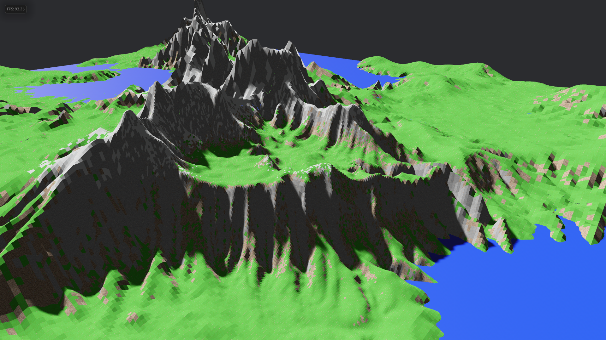
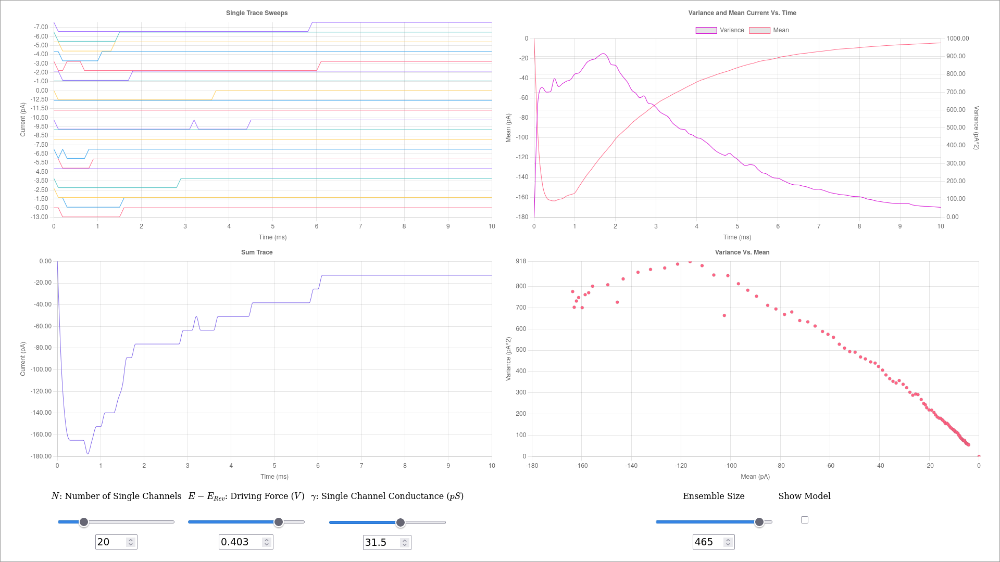

Projects

A procedural terrain generation and visualization system built with Rust and Bevy, with GPU-accelerated hydraulic erosion simulation and level-of-detail rendering. This project combines Perlin noise-based terrain generation with GPU-accelerated erosion to create detailed, naturally-weathered landscapes. The terrain system divides the world into multiple levels of detail, dynamic terrain features based on height and slope, and save/load functionality. Users can explore the generated worlds and adjust various generation parameters including seed, hilliness, mountain amount, and mountain size.

This is an interactive web-based Monte-Carlo simulator for single channel ion currents, for learning ion channel electrophysiology. It allows users to configure various channel parameters (conductance, voltage, duration, noise) and visualizes the resulting single-channel current traces through multiple interactive charts of: mean traces, Alvarez plots, and coefficient of variation analysis. The simulator is designed to help students understand ion channel behaviour by modelling realistic electrophysiological data and fitting mathematical models to the results.
This is a reinforcement learning agent that learns to trade stocks, built on a modified version of Werner Duvaud's MuZero implementation. It trains inside a custom environment built on Yahoo Finance data, using MuZero's learned world model and Monte Carlo tree search to plan trades, with self-play distributed across workers via Ray and training progress tracked live in TensorBoard.